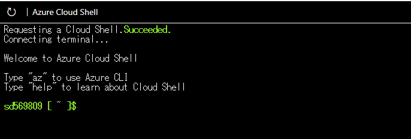
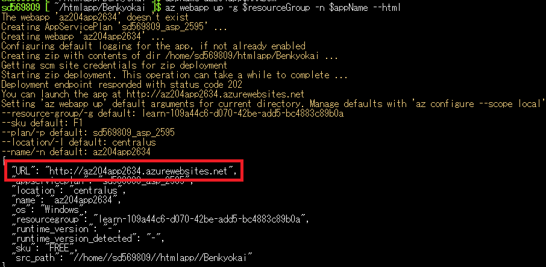
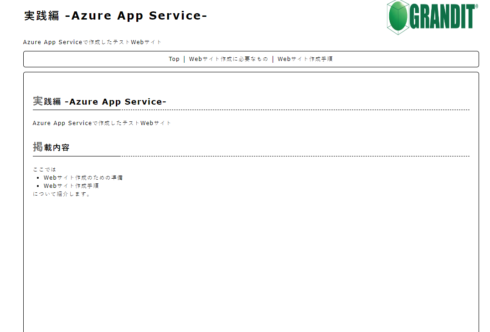

Webサイト作成手順
Webサイト作成の手順はだいたい以下の手順1.Azure CLIを起動
2.gitから作成したWebサイトの素材を取得
3.az webapp upコマンドでWebサイト作成
4.表示されたURLからWebサイトへアクセス
1.Azure CLIを起動
Azureを操作するためのCLIを起動。起動画面は以下画像参照Azure PortalなどのGUIからでも作成可能だが今回はEラーニング記載の手順に沿ってCLIから実行

2.gitから作成したWebサイトの素材を取得
Azure CLI上から 「git clone 作成したリポジトリのURL」などのコマンドで事前に作成したWebサイトの素材を取得3.az webapp upコマンドでWebサイト作成
Azure CLI上から「az webapp up」コマンドを実行してWebサイトを作成「az webapp up」コマンドについて実行時に以下を行う
- 引数($ResourceGroup)で指定した名前でリソースグループ及びApp Serviceプランを作成
- 引数($aooName)で指定した名前でアプリの作成
- Webアプリを作成し，ファイル内のコードを適用する

4.表示されたURLからWebサイトへアクセス
3.で表示されたURLから作成したWebサイトへアクセスることができる今回は一番シンプルな方法で作成したが，先ほど紹介した，オートスケーリングや開発環境の設定についてもAzure Portal等から行う事ができる

実践編 -Azure App Service-についての紹介終わり